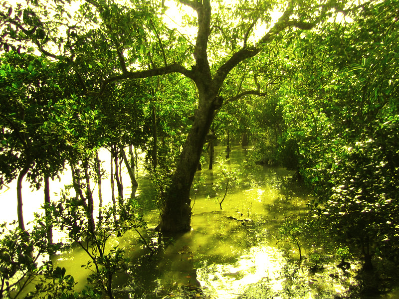

Sundarbans Mangroves
The Sundarbans Mangroves ecoregion on the coast forms the seaward fringe of the delta and is the world's largest mangrove ecosystem, with 20,400 square kilometres (7,900 sq mi) of an area covered. The dominant mangrove species Heritiera fomes is locally known as sundri or sundari. Mangrove forests are not home to a great variety of plants. They have a thick canopy, and the undergrowth is mostly seedlings of the mangrove trees. Besides the sundari, other tree species in the forest include Avicennia, Xylocarpus mekongensis, Xylocarpus granatum, Sonneratia apetala, Bruguiera gymnorhiza, Ceriops decandra, Aegiceras corniculatum, Rhizophora mucronata, and Nypa fruticans palms.[18] Twenty-six of the fifty broad mangrove species found in the world grow well in the Sundarbans. The commonly identifiable vegetation types in the dense Sundarbans mangrove forests are salt water mixed forest, mangrove scrub, brackish water mixed forest, littoral forest, wet forest and wet alluvial grass forests. The Bangladesh mangrove vegetation of the Sundarbans differs greatly from other non-deltaic coastal mangrove forests and upland forests associations. Unlike the former, the Rhizophoraceae are of minor importance.[citation needed]
Ecological succession
Ecological succession is generally defined as the successive occupation of a site by different plant communities.[19] In an accreting mudflats the outer community along the sequence represents the pioneer community which is gradually replaced by the next community representing the seral stages and finally by a climax community typical of the climatic zone.[20] Robert Scott Troup suggested that succession began in the newly accreted land created by fresh deposits of eroded soil. The pioneer vegetation on these newly accreted sites is Sonneratia, followed by Avicennia and Nypa. As the ground is elevated as a result of soil deposition, other trees make their appearance. The most prevalent, though one of the late species to appear, is Excoecaria. As the level of land rises through accretion and the land is only occasionally flooded by tides, Heritiera fomes begins to appear.[21]
Flora
Sundari tree (Heritiera littoralis)
Golpata (Nypa fruticans)
A total 245 genera and 334 plant species were recorded by David Prain in 1903.[22] While most of the mangroves in other parts of the world are characterised by members of the Rhizophoraceae, Avicenneaceae or Combretaceae, the mangroves of Bangladesh are dominated by the Malvaceae and Euphorbiaceae.[11]
The Sundarbans flora is characterised by the abundance of sundari (Heritiera fomes), gewa (Excoecaria agallocha), goran (Ceriops decandra) and keora (Sonneratia apetala) all of which occur prominently throughout the area. The characteristic tree of the forest is the sundari (Heritiera littoralis), from which the name of the forest had probably been derived. It yields a hard wood, used for building houses and making boats, furniture and other things. New forest accretions is often conspicuously dominated by keora (Sonneratia apetala) and tidal forests. It is an indicator species for newly accreted mudbanks and is an important species for wildlife, especially spotted deer (Axis axis). There is abundance of dhundul or passur (Xylocarpus granatum) and kankra (Bruguiera gymnorhiza) though distribution is discontinuous. Among palms, Poresia coaractata, Myriostachya wightiana and golpata (Nypa fruticans), and among grasses spear grass (Imperata cylindrica) and khagra (Phragmites karka) are well distributed.
The varieties of the forests that exist in Sundarbans include mangrove scrub, littoral forest, saltwater mixed forest, brackish water mixed forest and swamp forest. Besides the forest, there are extensive areas of brackish water and freshwater marshes, intertidal mudflats, sandflats, sand dunes with typical dune vegetation, open grassland on sandy soils and raised areas supporting a variety of terrestrial shrubs and trees. Since Prain's report there have been considerable changes in the status of various mangrove species and taxonomic revision of the man-grove flora.[23] However, very little exploration of the botanical nature of the Sundarbans has been made to keep up with these changes. Differences in vegetation have been explained in terms of freshwater and low salinity influences in the Northeast and variations in drainage and siltation. The Sundarbans has been classified as a moist tropical forest demonstrating a whole mosaic of seres, comprising primary colonisation on new accretions to more mature beach forests. Historically vegetation types have been recognised in broad correlation with varying degrees of water salinity, freshwater flushing and physiography.
Economy
The Sundarbans plays an important role in the economy of the southwestern region of Bangladesh as well as in the national economy. It is the single largest source of forest produce in the country. The forest provides raw materials for wood-based industries. In addition to traditional forest produce like timber, fuelwood, pulpwood etc., large-scale harvest of non-wood forest products such as thatching materials, honey, beeswax, fish, crustacean and mollusc resources of the forest takes place regularly. The vegetated tidal lands of the Sundarbans function as an essential habitat, produces nutrients and purifies water. The forest also traps nutrient and sediment, acts as a storm barrier, shore stabiliser and energy storage unit. Last but not the least, the Sunderbans provides an aesthetic attraction for local and foreign tourists.
The forest has immense protective and productive functions. Constituting 51% of the total reserved forest estate of Bangladesh, it contributes about 41% of total forest revenue and accounts for about 45% of all timber and fuel wood output of the country.[62] A number of industries (e.g., newsprint mill, match factory, hardboard, boat building, furniture making) are based on raw materials obtained from the Sundarbans ecosystem. Non-timber forest products and plantations help generate considerable employment and income opportunities for at least half a million poor coastal people. It provides natural protection to life and properties of the coastal population in cyclone-prone Bangladesh.
Agriculture
During monsoon the paddy fields in the Sunderbans are entirely flooded.
Part of the Sunderbans is shielded from tidal inflow by levees and there one finds villages and agriculture. During the monsoon season, the low lying agricultural lands are waterlogged and the summer crop (kharif crop) is therefore mainly deepwater rice or floating rice. In the dry winter season the land is normally uncropped and used for cattle grazing. However, the lands near the villages are irrigated from ponds that were filled up during monsoon, and vegetable crops (rabi crops) can be grown here.[63]
Habitation
The Sundarbans has a population of over 4 million[64] but much of it is mostly free of permanent human habitation. Despite human habitations and a century of economic exploitation of the forest well into the late 1940s, the Sundarbans retained a forest closure of about 70% according to the Overseas Development Administration (ODA) of the United Kingdom in 1979.
See also
Sundarbans Tiger Project
Indian Council of Forestry Research and Education
Sangu Wildlife Sanctuary
Environmental impact of development in the Sundarbans